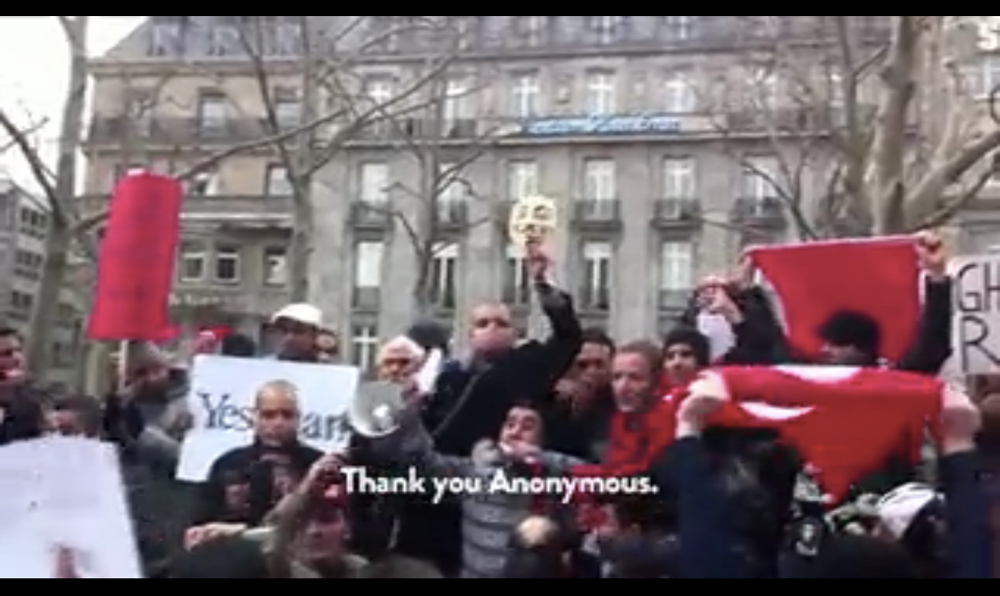

Activisme op het internet
This article is in Dutch.
Het internet heeft de laatste dertig jaar gezorgd voor radicale veranderingen in onze samenleving. Het internet verbindt alles en iedereen. Het internet is het medium dat alle andere media dichter bij elkaar brengt. Films, boeken, tv-series, kranten, tijdschriften en nieuwsprogramma’s, allemaal zijn ze te vinden op het internet. Maar betekent het internet ook iets voor de samenleving als geheel? Wat draagt ze bij, behalve ongekende mogelijkheden voor economische groei en innovatie?
De revolutie is al begonnen
Voor de opkomst van het internet was de modus operandi van praktisch alle media communiceren vanuit één bron naar vele ontvangers. Journalisten en media produceren al jaren media voor hun publiek. Zo lezen mensen sinds het begin van de vorige eeuw de krant en sindsdien zijn ze naar de radio gaan luisteren en naar de televisie gaan kijken.
De idee van een paar professionals die de massa inlichten en de mensen vertellen waarover ze denken, voelen en wat ze beleven is niet meer geldig. In het hedendaagse medialandschap krijgen de media ook feedback terug. Mensen kunnen nu via social media en email steeds directer en sneller feedback geven aan de producenten van media.
Waar media geproduceerd worden door professionals is er nu ook voor gewone internetgebruikers de kans om schrijver te worden. Iedereen die kan typen kan tegenwoordig zijn stem laten horen. Met behulp van blogs, fora en sociale netwerken kan iedereen content creeëren.
Raise your voice
Er is een specifieke groep mensen op het internet die alleen zijn stem laten horen niet genoeg vindt: de hacktivisten. Hacktivisten zijn politiek gemotiveerde hackers die computers en computernetwerken gebruiken voor het bevorderen van hun politieke doeleinden, voornamelijk vrijheid van meningsuiting, mensenrechten en ethiek op het gebied van informatie(verzameling).
Hacktivisten geloven dat ze met behulp van het internet hetzelfde kunnen bereiken als met protesteren zoals dat traditioneel gedaan wordt. Een van de bekendste groeperingen van hacktivisten is Anonymous. Met de onheilspellende woorden “We are anonymous. We are legion. We do not forgive. We do not forget. Expect us.” sluit Anonymous zijn boodschappen af. Indrukwekkend, maar wat dragen ze bij aan onze maatschappij?
Leden van Anonymous hebben rebellen in Libië, Tunisië en Algerije die vochten tegen dictatoriale regimes ondersteund bij het anoniem verbinding maken met internet, veilig communiceren over internet en tegengaan van overheidscensuur op internet. Ze hebben er mede toe bijgedragen dat deze regimes omvergeworpen zijn, waardoor deze landen nu vrijer en veiliger zijn dan ooit.

Libische rebellen die Anonymous bedanken voor de hulp.
Daarnaast doet Anonymous zijn best om er voor te zorgen dat grote bedrijven of organisaties geen censuur kunnen gebruiken op het internet. Zo hebben ze ervoor gezorgd dat een geruchtmakend interview met Tom Cruise niet verwijderd kon worden door Scientology, de aanloop naar ‘Project Chanology’, een grootscheepse aanval op de Church of Scientology. Uiteindelijk is deze actie uitgelopen op wereldwijde protesten in de echte wereld op 10 februari 2008. Ook in Amsterdam wordt er geprotesteerd bij de Scientology-kerk in de Spuistraat.
Het in stand houden van onze vrijheden op het internet en in de echte wereld, op welke manier dan ook, is belangrijk. Anonymous draagt hier misschien op een extreme, soms illegale manier aan bij, maar ik ben blij dat er een protestgroep bestaat die onze fundamentele rechten zo serieus neemt. Some rules are meant to be broken.